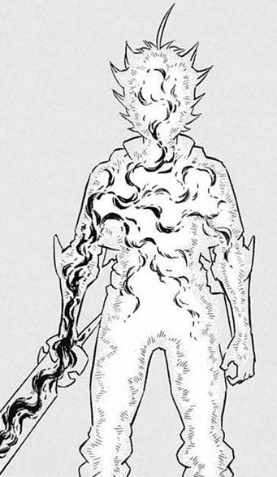

Asta possui um grimório de trevo de cinco folhas, que ele recebe durante sua luta contra Revchi, enquanto defendia Yuno.
O grimório é esfarrapado e coberto de sujeira, uma insígnia preta de trevo de cinco folhas no centro da sua capa frontal.

Esta forma de energia permite ao usuário anular outras formas de magia. Para usá-lo para todo seu potencial, espadas especiais são necessárias, que são armazenadas dentro do grimório do trevo de 5 folhas.
A Anti Magia naturalmente se opõe a qualquer mana e magia, então apenas alguém sem qualquer poder mágico pode usá-lo.
No entanto, sua propriedade de anulação mágica foi adicionada a outros tipos de magia através de circunstâncias especiais.
Asta também demonstrou a capacidade de cortar não apenas magia, mas também seres baseados em mana, como no caso dos quatro grandes espíritos.
